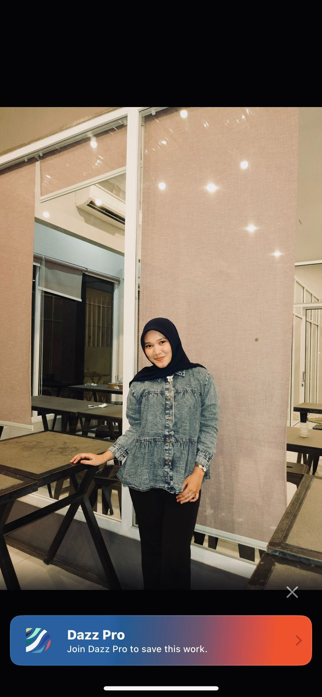

Profil Pribadi
Informasi lengkap tentang data diri dan biodata pribadi

Saya adalah mahasiswi semester 4 di Universitas Syiah Kuala dengan jurusan Informatika. Saya memiliki minat yang besar dalam pengembangan web dan desain UI/UX, serta ketertarikan dalam bidang public speaking yang terus saya kembangkan. Selain fokus pada perkuliahan, saya juga aktif dalam berbagai kegiatan kampus untuk menambah pengalaman dan memperluas relasi. Saat ini, saya sedang berproses mendaftar sebagai calon anggota himpunan di divisi Sosial Masyarakat (Sosmas), karena saya ingin turut berkontribusi langsung dalam kegiatan yang berdampak bagi lingkungan sekitar.
Saya percaya bahwa proses belajar tidak hanya terjadi di dalam kelas, tetapi juga melalui pengalaman, kolaborasi, dan keberanian untuk mencoba hal-hal baru. Oleh karena itu, saya selalu terbuka terhadap berbagai peluang yang dapat membantu saya berkembang, baik dalam aspek akademik maupun non-akademik. Dengan semangat belajar yang tinggi, saya berusaha untuk terus meningkatkan kemampuan diri, baik dalam hal teknis seperti coding dan desain, maupun soft skills seperti komunikasi, kerja tim, dan kepemimpinan.
Bagi saya, setiap tantangan adalah kesempatan untuk bertumbuh. Saya meyakini bahwa ketika kita berani mencoba, tidak ada yang benar-benar disebut sebagai kegagalan, melainkan proses pembelajaran yang berharga. Ke depannya, saya berharap dapat terus mengembangkan potensi diri, memberikan kontribusi yang positif, serta menjadi pribadi yang tidak hanya kompeten di bidang teknologi, tetapi juga mampu membawa manfaat bagi banyak orang.
Klik kartu untuk melihat detail ✨